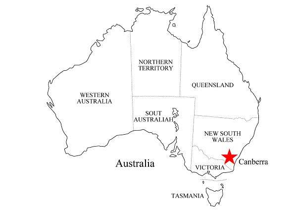

<div id="maincontent">
    <?php echo $header_obj->breadcrumbs(); ?>

<div id="australiamb">
    <div style="clear:both; height:10px;">&nbsp;</div>

    <div class="step_title">
        オーストラリアでワーキングホリデー
    </div>
    <p class="text01">初めての海外でも安全で安心のオーストラリア。生きた英語と豊な自然を堪能できるオーストラリアでのワーキングホリデー生活。</p>

    <div class="area-main-image">
        
    </div>

    <div class="table-content">
        <a href="#top"><h2>目次</h2></a>
        <ul>
            <li><a href="#01">▼ なぜオーストラリアでワーホリなのか?</a></li>
            <li><a href="#02">▼ オーストラリアの英語と国民性</a></li>
            <li><a href="#03">▼ オーストラリア・ワーキングホリデーの楽しみ方</a></li>
            <li><a href="#04">▼ オーストラリア・ワーキングホリデービザの特徴</a></li>
        </ul>
    </div>

    <div id="01">
        <div class="section-block">
            <h2>なぜオーストラリアでワーホリなのか</h2>
            
            <div class="area-accordion" id="area-accordion-australia-01">
                <p class="text01">
                    オーストラリアといえば、みなさんは何を思い浮かべますか？コアラ、カンガルー、エアーズロック、グレートバリアリーフ...広大な大地に広がる、とても美しい自然。世界中でもオーストラリアでしか出会えない動植物。そして、世界遺産として１７カ所もの登録がある<span class="bl">大自然がいっぱいのオーストラリア</span>。
                    
                </p>
                    <center class="area-image"></center>
                    
                <p class="text01">
                    ワーキングホリデーの魅力は、<span class="bl">滞在期間中、自由な行動がとれる</span>こと。<span class="bl">仕事</span>をするのもいいし、<span class="bl">語学</span>や<span class="bl">資格</span>の勉強をするのもいい。そして、短期の観光旅行では味わえない<span class="bl">異文化交流</span>と、
                ゆったりとした<span class="bl">観光</span>が出来ること。<br/><br/><br/>
                    オーストラリアは古くから多様な移民を受け入れ、それら様々な文化が融合した独自の文化を作り上げてきた国でもあります。単一民族である、われわれ日本人にとって多くの異文化と触れ合うことは、これからますます<span class="bl">国際化が進む時代を生き抜く為のとても貴重な経験</span>になるはずです。<br/>
                
                    ワーキングホリデーでオーストラリアに行くという事は、オーストラリアで暮すという事になりますが、暮す上で一番大切な事は、<span class="bl">安全</span>である事。
                    最近の日本でも凶悪な犯罪が増えてきていると言われてはいますが、それでも世界的に見ればとても安全な国の１つです。オーストラリアも<span class="bl">日本に負けず劣らず、大変治安の良い国</span>です。
                    また、<span class="bl">衛生面</span>及び<span class="bl">医療面</span>においてもオーストラリアは<span class="bl">世界最高水準</span>の国であると言えます。海外で水道水がそのまま飲める国は本当に少ないです。そして、オーストラリアには<span class="bl">日本語が通じる病院</span>も多くありますので、万一の場合でも安心して治療を受けることができます。<br/>
                    <br/><br/>
                    <span class="bl">ワーキングホリデー生活を安心・安全に楽しむ事ができる国、それがオーストラリア</span>です。<br/>
                    <br/>
                    </p>
                    <br/>
                </p>
            </div>

            <a href="/seminar/ser/know/first" style="text-decoration: none;"><p class="btn-link-serminar">無料セミナーについて確認する</p></a>
            <div class="top-move"><p><a href="#top">▲記事メニューに戻る</a></p></div>
        </div>

    </div>
    <div id="02">
        <div class="section-block">
            <h2>オーストラリアの英語と国民性</h2>
            
            <div class="area-accordion" id="area-accordion-australia-02">
                <p class="text01">
                    ワーキングホリデーでオーストラリアに行く目的の１つに、<span class="bl">語学の習得</span>があります。<br />
                    「いまどき英語の１つも喋れないとやっていけないよ。」と言われ始めて何年経つでしょうか？人・物・金が世界中を簡単に移動できる現代において、より一層の国際化は否めません。
                    そこで必要なのが英語になるかと思いますが、<span class="bl">言語を学ぶ事はその国の文化を学ぶ事</span>でもあります。<br/>
                    <br/><br/>
                    もともとオーストラリアはイギリスの植民地でした。そこでオーストラリアでは、英語が母国語として使用されています。
                    しかし、イギリスやアメリカに比べて<span class="bl">オーストラリアの英語は解りやすい</span>とも言われます。それは、オーストラリアが<span class="bl">多民族国家</span>であることがその要因でしょう。オーストラリアでは、言葉の違う民族同士が、より確実・簡単にコミュニケーションを図るために解りやすい英語が使われるようになった。
                    言い換えると、<span class="bl">もともと英語が母国語ではない方も多く暮らしている国</span>、オーストラリア。言語・語学習得の苦労も分かち合え、<span class="bl">つたない語学力であっても、それを受け入れ理解してくれる文化</span>がオーストラリアにはあります。これは、オーストラリアで英語を勉強し上達させる上で、大変重要な要素です。<br />
                
                    <br/><br/>
                    また、オーストラリアは古くから移民を受け入れてきたという歴史もあり、オーストラリア国民にとっても、<span class="bl">他の国の人々と暮らし、仕事や勉強をするという事は、まったく違和感のない事</span>です。
                    そしてオーストラリア政府は、外国語教育として日本語・インドネシア語・韓国語・中国語などのアジア諸国の言語を重視しています。特に日本語教育に力を入れており日本語が話せるオーストラリア人も多くいます。
                    もし日本語が話せなかったとしても、<span class="bl">オーストラリア人にとって日本は大変興味のある国であり、親日家も大変多い</span>です。これが、オーストラリアの国民性です。<br/>
                
                    <br/><br/>
                    ここでオーストラリアの噂話について１つ触れておきましょう。それは「<span class="bl">オーストラリアの英語はなまっている</span>」という話です。
                    このような話を皆さんは聞いたことがあると思いますが、本当のところはどうなんでしょうか...。
                    簡単に言ってしまえば、オーストラリアの英語は、なまってます。、正確にはオーストラリアの人々は、<span class="bl">なまったような言い回しを、オーストラリア国民の個性としてしている</span>。という所でしょうか。
                    日本語でも地方や年代によっては、強いなまりがあり、日本人でも聞き取れなかったり、解らなかったりする事があると思います。また、通常の言い回しは同じでも、イントネーションが多少違ったり、語尾が異なったりします。
                    これは、日本でもオーストラリアでも同じ事です。
                    英語も日本語も言語である為、時代と共に変わっていくものです。テレビのアナウンサーが使う言葉。若者が好んで使う言葉。その地域の文化に基づいた言葉。
                    これは、世界中どこでもあることです。<br/>
                    <br/><br/>
                    なまった英語を勉強するなんて絶対に嫌だ！！オーストラリアで英語勉強なんて嫌だ！！と思って、イギリスやアメリカに行ったからといっても、その場所・場所での言い回し。つまりは、何らかしらの「なまり」があるものです。
                    <span class="bl">なまりは、オーストラリアだけのものでは無い</span>という事です。<br />
                    <br/><br/>
                
                    これから世界中の多くの人が、より一層英語を話すようになり、<span class="bl">英語でのコミュニケーションを行う時代</span>が来るでしょう。
                    そうすると、<span class="bl">英語が母国語でない人が話す英語</span>が世界中に多くなります。言葉は人と人との意思伝達の手段です。いくら<span class="bl">綺麗な英語が話せたとしても、相手に通じなければ意味がありません</span>。アメリカ人だけ、イギリス人にだけ、オーストラリア人にだけしか通じない英語を学んでも、これからは意味が無いのです。<br/>
                    <br/><br/>
                    <span class="bl">多民族国家であるオーストラリアで、いろいろな人の英語に多く触れる</span>。オーストラリア人の英語を勉強することも必要ですが、これが、これからの英語の勉強法と言えるでしょう。<br />
                </p>
            </div>

            <a href="/seminar/ser/know/first" style="text-decoration: none;"><p class="btn-link-serminar">無料セミナーについて確認する</p></a>
            <div class="top-move"><p><a href="#top">▲記事メニューに戻る</a></p></div>
            <div class="seminar-block">
                <h3>まずは無料セミナーへ</br> 直近のオーストラリアに関する</br> セミナー日程はこちら</h3>
                <?php 
                    //settings for the calendar module display
                    $country_to_display = 'オーストラリア';
                    $number_to_display = '2';
                    $start_display_from = '2'; //empty is begining
                    display_horizontal_calendar($country_to_display,$number_to_display,$start_display_from);            
                ?>
            </div>
        </div>

    </div>

    <div id="03">
        <div class="section-block">
            <h2>オーストラリア・ワーキングホリデーの楽しみ方</h2>
            
            <div class="area-accordion" id="area-accordion-australia-03">
                <p class="text01">
                    <span class="bl">ワーキングホリデー</span>の魅力として、<span class="bl">滞在期間中、自由な行動をとる</span>ことが出来ます。<br /><br />
                    通常、日本人が海外に行く場合、ビザ（査証）を取得する必要があります。ハワイ(※１)や韓国に旅行に行く場合、ビザ申請を明確に行い取得する事は無いと思いますが、これは渡航が短期間であり、その目的が観光など限定された行為の場合には、ビザの申請・取得を免除するという協定が既に存在するからです。<br/>
                <br/>
                
                    外国人（オーストラリア人以外）がオーストラリアに行く場合、オーストラリアへの渡航目的及び期間を明確にして、必要なビザ（査証）(※２)の取得が必要です。
                    つまり、観光目的でオーストラリアに入国する場合は<span class="bl">観光ビザ</span>、語学留学など勉強を目的でオーストラリアに入国する場合は<span class="bl">学生ビザ</span>、仕事を目的でオーストラリアに入国する場合は<span class="bl">就労ビザ</span>を申請し取得する必要があります。<span class="bl">ワーキングホリデー</span>もこれらオーストラリアのビザの種類の１つになります。<br/>
                    <br/>
                    しかし、ワーキングホリデービザの場合、<span class="bl">滞在期間は１２ヶ月(※３)以内</span>と規定されているものの、その<span class="bl">目的は自由</span>。つまりはオーストラリア国内で、<span class="bl">観光も勉強も仕事も自由(※４)</span>に行うことが出来ます。<br/>
                    <br/>
                    そんな事か...　と思われる方もいるかもしれませんが、ワーキングホリデービザような自由な行動がとれるビザは、<span class="bl">大変珍しく、大変貴重</span>なものなのです。オーストラリアに感謝です。<br />
                <br/>
                
                    逆に、ワーキングホリデービザは自由であるが故に、せっかくのオーストラリア生活を満喫できず、<span class="bl">大切なワーキングホリデービザを有効的に活用できない</span>方が居る事も事実です。<span class="bl">１８歳から３０歳まで</span>の方のみ、しかも<span class="bl">一生に一回(※５)</span>のこのチャンスを皆さんは活用して是非有意義なワーキングホリデー生活をオーストラリアで送ってください。<br/>
                    <br/>
                    <span class="bl">ワーキング（仕事）</span>と<span class="bl">ホリデー（休暇・交流）</span>でワーキングホリデーです。仕事（ワーキング）も遊び（ホリデー）もめいいっぱい楽しんでください。<br />
                <br/>
                    ここで１つの<span class="bl">ワーキングホリデー生活１年間のプラン</span>を紹介します。（オーストラリア版）<br/><br/>
                </p>
                <table class="nittei">
                    <tr>
                        <td class="nittei_span">
                            <p>滞在期間</p> １～３ヶ月目
                        </td>
                        <td class="nittei_naiyou">
                            <div class="nittei_title">
                                <span class="bl"><font color="blue">まずは英語を勉強する！！</font></span>
                            </div>
                            <div class="nittei_setumei">
                                <br/>
                                語学力が心配な場合は、初めに<span class="bl">語学学校で英語の勉強</span>する事をおススメします。<br/>
                                日常生活にも言葉は必要ですが、これからの１２ヶ月のワーキングホリデー滞在を有効的に暮す為には、<span class="bl">オーストラリアの方との交流が不可欠</span>です。
                                また、仕事をする場合、<span class="bl">円滑なコミュニケーションがとれなければ面接すら通れません</span>。
                                仕事（ワーキング）も交流（ホリデー）もしないのであれば、ワーキングホリデーをする意味が無くなってしまいます。<br/>
                                <br/>
                                そして、語学学校に行くメリットとして友達が<span class="bl">沢山出来る</span>点も忘れてはいけません。
                                オーストラリアに限らず海外はコネ社会です。
                                これからの仕事探しや、家探しなど、遊び以外の場面でも<span class="bl">人とのコネクションは大変重要</span>です。<br/>
                                <br/>
                                色々な特色をもった語学学校がオーストラリアには沢山あり、それらの中から自分に合った学校を選ぶのはとても難しいと思います。
                                まずは、<a href="http://www.jawhm.or.jp/seminar.html"><span class="bl">無料セミナー</span></a>にご参加頂き、様々な情報収取を行ってください。<br/>
                                <br/>
                            </div>
                        </td>
                    </tr>
                    <tr>
                        <td class="nittei_span">
                            <p>滞在期間</p> ４～６ヶ月目
                        </td>
                        <td class="nittei_naiyou">
                            <div class="nittei_title">
                                <span class="bl"><font color="blue">ワーキングホリデーだから、仕事でもしてみるか！！</font></span>
                            </div>
                            <div class="nittei_setumei">
                                <br/>
                                <span class="bl">滞在資金を現地で稼ぐ</span>ことができるのもワーキングホリデーの魅力の１つです。
                                この頃になれば、オーストラリアの生活にも十分慣れ、新しい事にチャレンジする余裕も、ある程度の英語力も付くはずです。
                                ぜひ、頑張って<span class="bl">オーストラリア人と一緒の職場での仕事</span>を探してみてください。
                                医者・弁護士など資格が必要となる職業以外であれば、<span class="bl">基本的にどんな仕事でもできます</span>。<br/>
                                <br/>
                                英語が心配な場合は、日本人観光客をお客さんとする<span class="bl">旅行会社</span>や<span class="bl">土産物屋</span>で働くのも１つの手です。オーストラリアで日本語が話せるということは、外国語が話せるという事ですから。
                                オーストラリア人よりも能力が高いと見られます。（もちろん、英語が話せた上で話ですが..）<br/>
                                <br/>
                                <span class="bl">仕事探しの方法</span>や、<span class="bl">履歴書の書き方</span>などをご案内する<a href="http://www.jawhm.or.jp/seminar.html"><span class="bl">無料セミナー</span></a>を開催しております。是非ご参加ください。<br/>
                                <br/>
                                繰り返しになりますが、<span class="bl">海外で仕事ができるビザは大変貴重</span>です。ワーキングホリデーの魅力を生かし、ワーキングしてみましょう。<br/>
                                <br/>
                            </div>
                        </td>
                    </tr>
                    <tr>
                        <td class="nittei_span">
                            <p>滞在期間</p> ７～９ヶ月目
                        </td>
                        <td class="nittei_naiyou">
                            <div class="nittei_title">
                                <span class="bl"><font color="blue">セカンドワーキングホリデービザの取得を目指して！！</font></span>
                            </div>
                            <div class="nittei_setumei">
                                <br/>
                                オーストラリアのワーキングホリデービザの魅力として、<span class="bl">セカンドワーキングホリデー</span>という制度があり、このセカンドワーキングホリデービザを取ると<span class="bl">最大２４カ月</span>も、オーストラリアに滞在することが出来るようになります。<br/>
                                このセカンドワーキングホリデービザの申請にあたり「<span class="bl">最低３ヶ月の間、政府指定地域で季節労働に従事した証明を提出できること</span>」という条件があります。
                                なんだか難しい表現ですが、オーストラリアのちょっとした田舎に行って、イチゴとかスイカとかの<span class="bl">収穫のお手伝い</span>をしてください。という事です。<br/>
                                <br/>
                                ほとんどが<span class="bl">肉体労働</span>なので女性はちょっときついかもしれませんが、収穫した<span class="bl">農作物の仕分けや箱詰め</span>という比較的楽な作業もあります。また、給料が歩合制であることが多いので男性であれば、その後のワーキングホリデー資金をかなり稼ぐことも可能です。<br/>
                                <br/>
                                セカンドワーキングホリデービザについてご説明する<a href="http://www.jawhm.or.jp/seminar.html"><span class="bl">無料セミナー</span></a>もありますので、詳しいお話しをぜひ聞いてください。<br/>
                                <br/>
                            </div>
                        </td>
                    </tr>
                    <tr>
                        <td class="nittei_span">
                            <p>滞在期間</p> １０～１２ヶ月目
                        </td>
                        <td class="nittei_naiyou">
                            <div class="nittei_title">
                                <span class="bl"><font color="blue">気楽にオーストラリアを満喫！！</font></span>
                            </div>
                            <div class="nittei_setumei">
                                <br/>
                                英語も上達したし、その英語でオーストラリア人と一緒に仕事もできた。そんな自分に、ワーキングホリデー生活の<span class="bl">最後にご褒美</span>をあげましょう。<br/>
                                <br/>
                                そう。<span class="bl">ホリデー（休暇）</span>ですね。
                                オーストラリアは<span class="bl">日本の約６倍</span>の大きさがあり、シドニー、メルボルン、アデレード、ケアンズ、パースを初め<span class="bl">魅力的な都市や雄大な大自然</span>が多くあります。
                                <span class="bl">グレートバリアリーフ</span>で<span class="bl">スキューバダイビング</span>のライセンスを取るのもいいでしょう。地球の「へそ」と呼ばれるエアーズロックを見るのもいいでしょう。
                                <span class="bl">サーフィン</span>や<span class="bl">アート</span>など、新しい趣味を始めるのも面白いです。オーストラリアは見所満載です。<br/>
                                <br/>
                                <span class="bl">ラウンド</span>と言って、<span class="bl">オーストラリア全土を１周しながら旅行</span>をする方もいます。行く先々で色々な人に触れ合い、たまには大騒ぎして楽しむ。オーストラリアに暮す人だけではなく、
                                各国からワーキングホリデービザを利用してオーストラリアに来ている人に出会うチャンスもたくさんあります。オーストラリアに居ながら、<span class="bl">世界中の人と友達</span>になれるかもしれませんね。<br/>
                                <br/>
                            </div>
                        </td>
                    </tr>
                </table>
                <p class="text01">
                    <br/>
                    これは、あくまでもワーキングホリデー<span class="bl">生活のプランの１つ</span>です。先にも述べたとおり、ワーキングホリデーでは自由な滞在を楽しむ事ができます。この通りにワーキングホリデー生活を送る必要はありません。オーストラリアでのワーキングホリデー滞在期間中の出来事は、<span class="bl">絶対に一生の思い出、また良い経験</span>になります。<br/>
                    <br/><br/>
                    帰国してから<span class="bl">友達に自慢できる</span>ホリデー体験、ワーキングホリデー生活をぜひとも送ってください。そして、自分の<span class="bl">将来のキャリアアップ</span>となるワーキング経験をオーストラリアでたくさんしてください。
                    英語だけじゃない、仕事（ワーキング）だけじゃない、遊び（ホリデー）だけでもない、<span class="bl">あなただけのオーストラリア・ワーキングホリデー</span>を楽しんでください。
                
                    <br/>
                    <p class="text10p-tyu"><font color="#888">※１　2009年1月12日から米国に査証免除者として渡航する場合、ＥＳＴＡへの登録が義務化されました。</font></p>
                    <p class="text10p-tyu"><font color="#888">※２　オーストラリアに渡航する場合、必ずビザの申請・取得が必要です。短期の観光目的の場合はＥＴＡＳが利用可能です。</font></p>
                    <p class="text10p-tyu"><font color="#888">※３　オーストラリアの場合、一定の条件をクリアした方の場合、セカンドワーキングホリデービザの取得が可能で、その場合最大２４カ月の滞在が可能となります。</font></p>
                    <p class="text10p-tyu"><font color="#888">※４　オーストラリア・ワーキングホリデービザでの仕事及び勉強は、１雇用主のもとでの就労が最大６ケ月、就学又はトレーニングが最大４カ月となります。</font></p>
                    <p class="text10p-tyu"><font color="#888">※５　ワーキングホリデービザの発給は、１カ国に対し１回のみです。</font></p>
                <br/><br/>
            </p>
            </div>

            <a href="/seminar/ser/know/first" style="text-decoration: none;"><p class="btn-link-serminar">無料セミナーについて確認する</p></a>
            <div class="top-move"><p><a href="#top">▲記事メニューに戻る</a></p></div>
            
        </div>

    </div>
    <div id="04">
        <div class="section-block">
            <h2>オーストラリア・ワーキングホリデービザの特長</h2>
            
            <div class="area-accordion" id="area-accordion-australia-04">
                <p class="text01">
                    オーストラリアのワーキングホリデービザは、日本人であれば<span class="bl">インターネットで申請</span>をすることができます。<br /><br />
                    通常、ワーキングホリデービザの申請から<span class="bl">４８時間以内</span>に手続きは完了し(※６)、早い場合は、<span class="bl">２～３時間</span>でワーキングホリデービザが下りた(※７)という方もいます。つまり、朝起きた時に、「あぁ、オーストラリアに行こう！！」と思い立ち、ワーキングホリデービザを申請し、その日の夜の飛行機でオーストラリアに旅立つ事も、運が良ければできてしまうのです。(※８)
                    オーストラリア行きの飛行機は夜便ですから、次の日から、オーストラリアワーキングホリデーライフの始まりです。<br/>
                    </p><br/>
                    <p class="text01">
                    オーストラリア政府は、日本人以外にも、アメリカ・カナダ・デンマーク・フランス・ドイツ・香港・イタリア・韓国・台湾・イギリス・インドネシア・マレーシア・タイなどなど、多くの国の方をワーキングホリデーとして受け入れています。
                    オーストラリアは大変ワーキングホリデーに積極的な国です。つまり、<span class="bl">オーストラリアにワーキングホリデーで行くと、世界中の人々と出会い友達になる事ができる</span>のです。
                    オーストラリアでのワーキングホリデーを満喫した後、オーストラリアで出会った人を訪ねて各国を廻ってから日本に帰国する方もいます。<br/>
                    </p><br/>
                    <p class="text01">
                    また、通常ワーキングホリデービザでの滞在は<span class="bl">最大１２ヶ月</span>となりますが、<span class="bl">セカンドワーキングホリデー</span>を取得することにより<span class="bl">最大２４カ月間</span>の間、オーストラリアに滞在することが可能になります。<br />
                    </p><br/>
                    <p class="text01">
                    このように、比較的簡単に、しかも長期間滞在できるオーストラリアのワーキングホリデービザですが、まだまだご案内したい内容がたくさんあります。
                    また、ワーキングホリデーを始め、<span class="bl">各種ビザの申請方法や必要書類など、変更される場合があります</span>。<br/>
                    <br/><br/>
                    ぜひ、<a href="http://www.jawhm.or.jp/seminar.html"><span class="bl">無料セミナー</span></a><span class="bl">にご参加頂き、正確で最新のオーストラリア・ワーキングホリデー情報を入手</span>してください。<br/>
                    なお、<a href="http://www.jawhm.or.jp/visa/v-aus.html"><span class="bl">オーストラリア・ワーキングホリデービザの申請方法などの詳細</span></a><span class="bl">はこちら</span>からご確認頂く事もできます。<br/>
                    <br/><br/>
                    日本ワーキングホリデー協会では、<a href="http://www.jawhm.or.jp/mem/"><span class="bl">ワーキングホリデービザ申請のお手伝い</span></a>や、<a href="http://www.jawhm.or.jp/mem/"><span class="bl">ワーキングホリデー生活のプランニングご相談（カウンセリング）</span></a>を行っております。ぜひご活用ください。<br/>
                    <br/>
                    <p class="text10p-tyu"><font color="#888">※６　健康診断の必要性など、追加の手続きが必要となった場合は、ワーキングホリデービザの申請に最長で４週間かかります。</font></p>
                    <p class="text10p-tyu"><font color="#888">※７　ワーキングホリデービザ申請・発給に係る手続きはオーストラリア当局の基に行われます。全ての方が同じ条件で手続き処理が行われる訳ではありません。オーストラリアのワーキングホリデービザの申請は、十分な余裕を持って行ってください。</font></p>
                    <p class="text10p-tyu"><font color="#888">※８　あくまでも可能性の話であり、一生に一回しか利用できないオーストラリア・ワーキングホリデーという制度を有効的に利用する為には、十分な情報収集とプランニングが必要です。</font></p><br />
                    </p>
                    <br/><br/>
            </div>

            <a href="/seminar/ser/know/first" style="text-decoration: none;"><p class="btn-link-serminar">無料セミナーについて確認する</p></a>
            <div class="top-move"><p><a href="#top">▲記事メニューに戻る</a></p></div>
            <div class="seminar-block">
                <h3>オーストラリアのワーキングホリデー </br>ビザについての説明や取得方法に </br>ついてご案内しています</h3>
                <a href="/visa/v-aus.html">
                    <div class="whaus-visa"></div>
                </a>
                <h3>まずは無料セミナーへ</br> 直近のオーストラリアに関する</br> セミナー日程はこちら</h3>
                <?php 
                    //settings for the calendar module display
                    $country_to_display = 'オーストラリア';
                    $number_to_display = '2';
                    $start_display_from = '6'; //empty is begining
                    display_horizontal_calendar($country_to_display,$number_to_display,$start_display_from);             
                ?>
            </div>
        </div>

    </div>

  </div>
  